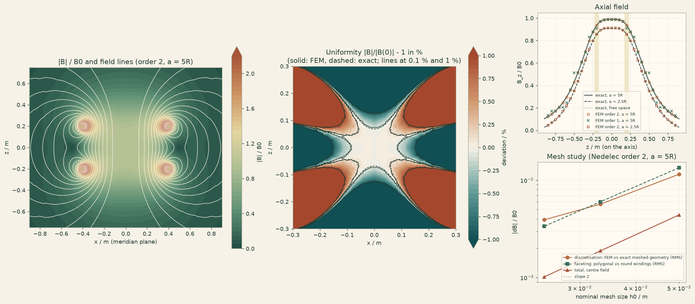

Docs › Examples › Magnetic field of a Helmholtz coil
Magnetostatics · 3D
Magnetic field of a Helmholtz coil
Two coaxial coils one radius apart: the famously uniform field at the centre, and how mesh, coil faceting and the air domain each limit the accuracy.

What it computes
OneSimulation solves the 3D magnetic vector potential with second-order Nedelec edge elements and an exact Coulomb gauge on an octant of an air sphere containing both multiturn coils, compares first-order elements, and repeats the solve in a smaller air domain.
What it checks
The centre field agrees with the exact field of the meshed coils to 0.03 % (0.004 % after extrapolation); discretisation and coil-faceting errors are separated and both converge, and the axial uniformity matches the exact loop formula.
The notebook
The complete notebook, cell by cell. Run it to produce the figures and the comparison printout.
A Helmholtz coil is a pair of identical circular coils on a common axis, spaced by their radius and carrying the same current in the same direction. At this spacing the second derivative \(\mathrm d^2B_z/\mathrm dz^2\) of the axial field vanishes at the centre, so the field there is flat to fourth order. That is why such coils are used to cancel the Earth's field or to calibrate magnetometers.
Set-up of the original problem: mean coil radius \(R=0.4\) m, winding cross-section a \(5\times5\) cm square, coil centres at \(z=\pm R/2=\pm0.2\) m, 10 turns per coil, \(0.25\) mA per turn, in air (\(\mu=\mu_0\)). The thin-loop textbook value of the centre field is
OneSimulation solves the magnetostatic equations for the vector potential,
where \(\mathbf J=\dfrac{NI}{w^2}\,\hat{\boldsymbol\varphi}\) in the two windings and zero elsewhere.
Computational domain and boundary conditions. The air region is a sphere of radius \(a=2\) m (\(5R\)). The azimuthal current and the mirror symmetry about the mid-plane make one octant of the sphere (\(x\ge0\), \(y\ge0\), \(z\ge0\)) sufficient. This is still a full 3D model: the mesh is tetrahedral, both coils are 3D rings (a quarter of the upper one lies in the octant), and \(\mathbf B(x,y,z)\) has all three components. Boundary conditions on every face:
| face | condition | why it is exact or approximate | |---|---|---| | planes \(x=0\) and \(y=0\) (contain the axis) | \(\mathbf n\times\mathbf A=0\) | exact: \(\mathbf A\) is azimuthal, i.e. normal to these planes | | mid-plane \(z=0\) | \(\mathbf n\times\mathbf H=0\) (zero tangential \(\mathbf H\)) | exact: by mirror symmetry \(\mathbf B\) is normal to the mid-plane | | sphere \(r=a\) | magnetic insulation \(\mathbf n\times\mathbf A=0\) | truncation of the open space |
Numerical method. Spatial: curl-conforming Nedelec edge elements (first kind, order 2) on tetrahedra, with the Coulomb gauge enforced exactly by a nodal Lagrange multiplier (mixed saddle-point formulation). For comparison, the same mesh is also solved with order-1 Nedelec elements. Solver: sparse direct LU factorisation of the saddle-point system. The problem is stationary, so there is no time integrator. Mesh: a graded triangulation of the meridian quarter-disc \((r,z)\) that contains the winding square exactly, swept around the axis over \(90^\circ\) and split into tetrahedra (built in numpy, passed as an unstructured simplex mesh).
Reference. (1) Exact free-space field of the two windings. The field of a circular current loop is known in closed form with complete elliptic integrals (Smythe, Static and Dynamic Electricity, 3rd ed., 1968, §7.10; Jackson, Classical Electrodynamics, 3rd ed., §5.5). Integrating it over the square winding cross-section with a \(12\times12\) Gauss rule gives the Biot-Savart field of the finite-section coils at any point outside the windings to machine precision. (2) Exact solution of the bounded problem. Magnetic insulation on the sphere forces \(\mathbf B\cdot\mathbf n=0\) there, which adds an interior harmonic field \(\nabla\chi\) with \(\chi=\sum_l c_l\,r^l P_l(\cos\theta)\). Its coefficients follow from the Legendre expansion of the free-space normal field on the sphere, \(c_l=-b_l/(l\,a^{l-1})\). The dominant term is a uniform field \(-\mu_0 m/(2\pi a^3)\) (\(m\) = dipole moment of the pair), which lowers the field by \(1.1\,\%\) for \(a=5R\) and by \(9\,\%\) for \(a=2.5R\). The finite-element solution must converge to this bounded solution. (3) Exact field of the meshed (faceted) windings. The swept mesh represents each round winding by a regular polygon with \(4n_\varphi\) straight sides. Its Biot-Savart field is also known exactly (sum of straight finite segments, integrated over the winding section). The difference between the computed field and this field is the pure discretisation error. The difference between the polygonal and the round winding is the geometric (faceting) error, and it vanishes as \(n_\varphi^{-2}\). Both are reported. (4) The Helmholtz uniformity: \(B_z(z)/B_z(0)-1\) along the axis and the size of the region where \(|\mathbf B|\) stays within \(0.1\,\%\) and \(1\,\%\) of the centre value. (5) A three-level mesh study with observed order and Richardson estimate. (6) An air-domain-size study (\(a=2.5R\) against \(a=5R\)).
from dataclasses import dataclass
from importlib.metadata import version
import time
import numpy as np
import matplotlib.pyplot as plt
import matplotlib
from cycler import cycler
from matplotlib.colors import LinearSegmentedColormap
# OneSimulation figure style: cream paper, dark-green ink, green-sand-copper field colours
CREAM, INK, GREEN, COPPER = "#F7F2E7", "#223D35", "#336B57", "#B66E43"
FIELD_CMAP = LinearSegmentedColormap.from_list(
"onesimulation", ["#214D43", "#5F9175", "#A8BC91", "#E4D6A0", "#CD9561", "#A85539"])
DIVERGING_CMAP = LinearSegmentedColormap.from_list(
"onesimulation_diverging", ["#104F54", "#5E9996", "#F7F2E7", "#D2996E", "#A4472D"])
for _cmap in (FIELD_CMAP, DIVERGING_CMAP):
if _cmap.name not in matplotlib.colormaps:
matplotlib.colormaps.register(_cmap)
plt.rcParams.update({
"figure.facecolor": CREAM, "savefig.facecolor": CREAM, "axes.facecolor": "#FFFAF2",
"text.color": INK, "axes.labelcolor": INK, "axes.titlecolor": INK, "axes.edgecolor": "#9FA593",
"xtick.color": INK, "ytick.color": INK, "grid.color": "#D5D7C8", "image.cmap": "onesimulation",
"axes.prop_cycle": cycler(color=[GREEN, COPPER, "#5F9175", "#A85539", "#214D43", "#CD9561", "#8B9A8D"]),
})
from matplotlib.patches import Rectangle
from numpy.polynomial import legendre
from scipy.optimize import brentq
from scipy.spatial import Delaunay
from scipy.special import ellipe, ellipk
from onesim.cad.geometry.primitives import Geometry
from onesim.materials import VacuumPermeability
from onesim.meshing import UnstructuredSimplexMesh
from onesim.numerics import Numerics
from onesim.numerics.discretization.geometry.carriers.kernels.simplex.tetrahedral import boundary_faces
from onesim.numerics.fem import FiniteElement, Nedelec
from onesim.numerics.linear import SparseDirect
from onesim.physics.magnetostatics import (
CoulombGauge, MagneticFieldBoundary, MagneticInsulation, MagneticVectorPotential, Magnetostatics,
)
from onesim.simulation import Problem, Simulation
print("OneSimulation:", version("onesimulation"))Parameters
R = 0.4 # m, mean coil radius
w = 0.05 # m, side of the square winding cross-section
turns, current = 10, 0.25e-3 # turns per coil, A per turn
a_main, a_small = 2.0, 1.0 # m, radius of the air sphere (5R) and of the tight one (2.5R)
mu0 = float(VacuumPermeability().evaluate())
B0 = 0.8**1.5 * mu0 * turns * current / R
print(f"thin-loop centre field (4/5)^(3/2) mu0 N I / R = {B0 * 1e9:.4f} nT")Exact reference fields
Field of one circular loop of radius \(a_\ell\) at height \(z_\ell\) carrying \(I_\ell\), with \(\zeta=z-z_\ell\), \(q=(a_\ell+r)^2+\zeta^2\), \(m=4a_\ell r/q\) and the complete elliptic integrals \(K(m)\), \(E(m)\):
def loop_field(radius, height, r, z, loop_current):
r, z = np.asarray(r, float), np.asarray(z, float)
zeta = z - height
q = (radius + r) ** 2 + zeta**2
m = 4 * radius * r / q
K, E = ellipk(m), ellipe(m)
d = (radius - r) ** 2 + zeta**2
Bz = mu0 * loop_current / (2 * np.pi * np.sqrt(q)) * (K + (radius**2 - r**2 - zeta**2) / d * E)
safe_r = np.where(r > 1e-12, r, 1.0)
Br = np.where(r > 1e-12, mu0 * loop_current * zeta / (2 * np.pi * safe_r * np.sqrt(q))
* (-K + (radius**2 + r**2 + zeta**2) / d * E), 0.0)
return Br, Bz
GAUSS_X, GAUSS_W = np.polynomial.legendre.leggauss(12)
def free_space_field(r, z):
"""Biot-Savart field of both finite-section windings (12 x 12 Gauss points per winding)."""
Br = np.zeros(np.broadcast(np.asarray(r), np.asarray(z)).shape)
Bz = np.zeros_like(Br)
for centre in (-R / 2, R / 2):
for xi, wi in zip(GAUSS_X, GAUSS_W):
for eta, wj in zip(GAUSS_X, GAUSS_W):
br, bz = loop_field(R + 0.5 * w * xi, centre + 0.5 * w * eta, r, z,
turns * current * wi * wj / 4)
Br += br
Bz += bz
return Br, Bz
def sphere_coefficients(a, l_max=25, n_quad=120):
"""Interior harmonic chi = sum c_l r^l P_l that cancels B.n of the free field on r = a."""
x, weights = np.polynomial.legendre.leggauss(n_quad)
s = np.sqrt(1 - x**2)
Br, Bz = free_space_field(a * s, a * x)
normal = Br * s + Bz * x
return {l: -(2 * l + 1) / 2 * np.sum(weights * normal * legendre.legval(x, [0] * l + [1])) / (l * a ** (l - 1))
for l in range(1, l_max + 1, 2)}
def chi(coefficients, r, z):
rho = np.hypot(r, z)
cos_t = np.where(rho > 0, z / np.where(rho > 0, rho, 1.0), 0.0)
return sum(c * rho**l * legendre.legval(cos_t, [0] * l + [1]) for l, c in coefficients.items())
def bounded_field(r, z, coefficients, step=1e-5):
"""Exact field of the coils inside the insulated sphere: free field plus grad(chi)."""
Br, Bz = free_space_field(r, z)
Br = Br + (chi(coefficients, r + step, z) - chi(coefficients, r - step, z)) / (2 * step)
Bz = Bz + (chi(coefficients, r, z + step) - chi(coefficients, r, z - step)) / (2 * step)
return Br, Bz
def segment_field(points, starts, ends, currents):
"""Exact field of straight thin current segments (Biot-Savart, closed form), summed."""
B = np.zeros_like(points)
for chunk in range(0, len(points), 64):
P = points[chunk:chunk + 64, None, :]
r1, r2 = P - starts[None], P - ends[None]
n1, n2 = np.linalg.norm(r1, axis=2), np.linalg.norm(r2, axis=2)
factor = currents[None] * (n1 + n2) / (n1 * n2 * (n1 * n2 + np.einsum("pkc,pkc->pk", r1, r2)))
B[chunk:chunk + 64] = mu0 / (4 * np.pi) * np.einsum("pk,pkc->pc", factor, np.cross(r1, r2))
return B
def polygon_windings(n_phi, n_gauss=8):
"""Straight segments of the faceted windings: regular polygons with 4 n_phi sides."""
dphi = 0.5 * np.pi / n_phi
half = np.cos(dphi / 2)
x, wq = np.polynomial.legendre.leggauss(n_gauss)
corners = np.arange(4 * n_phi + 1) * dphi
starts, ends, currents = [], [], []
for centre in (-R / 2, R / 2):
for xi, wi in zip(x, wq):
for eta, wj in zip(x, wq):
vertex_radius = (R + 0.5 * w * xi) # vertices lie on the round coil radius
z = centre + 0.5 * w * eta
ring = np.column_stack((vertex_radius * np.cos(corners), vertex_radius * np.sin(corners),
np.full_like(corners, z)))
starts.append(ring[:-1])
ends.append(ring[1:])
currents.append(np.full(4 * n_phi, turns * current * wi * wj / 4))
return np.vstack(starts), np.vstack(ends), np.concatenate(currents)
sphere = {a: sphere_coefficients(a) for a in (a_main, a_small)}
B_free_centre = float(free_space_field(0.0, 0.0)[1])
print(f"exact free-space centre field (finite windings): {B_free_centre * 1e9:.5f} nT "
f"({100 * (B_free_centre / B0 - 1):+.3f} % from the thin-loop value)")
for a, c in sphere.items():
image_centre = (chi(c, 0.0, 1e-5) - chi(c, 0.0, -1e-5)) / 2e-5
print(f"insulated sphere a = {a:.1f} m ({a / R:.1f} R): image field at the centre {100 * image_centre / B_free_centre:+.3f} %"
f" of the free-space field (uniform dipole term alone: {100 * c[1] / B_free_centre:+.3f} %)")Geometry and mesh
The meridian quarter-disc is triangulated (Delaunay) from a point set. The first part is a graded tensor grid in \(0\le r\le0.65\) m, \(0\le z\le0.45\) m: spacing \(h_0\) in and around the winding, \(1.6h_0\) in the centre region and \(2h_0\) at the edge of the grid. Its lines run along the four sides of the winding square, so every triangle lies either inside or outside the winding. The second part is a set of quarter-circle rings outside the grid, whose spacing grows linearly with the radius up to the sphere. The triangles are swept around the axis in \(n_\varphi\) steps over \(90^\circ\), each prism is split into three tetrahedra by a conforming vertex-ordering rule (Dompierre et al., Proc. 8th Int. Meshing Roundtable, 1999), and the prisms that touch the axis degenerate into pyramids and tetrahedra, of which only the non-degenerate cells are kept. Mesh levels are set by the nominal spacing \(h_0\) near the coils, with \(n_\varphi\propto1/h_0\).
def graded_line(pieces):
"""Node coordinates along consecutive pieces (x0, x1, first spacing, last spacing)."""
nodes = [pieces[0][0]]
for x0, x1, s0, s1 in pieces:
n = max(1, int(round(2 * (x1 - x0) / (s0 + s1))))
sizes = np.linspace(s0, s1, n)
nodes += list(x0 + (x1 - x0) * np.cumsum(sizes) / sizes.sum())
return np.array(nodes)
def meridian(a, h0, growth=0.4, r_box=0.65, z_box=0.45):
hc, hb = 1.6 * h0, 2.0 * h0 # spacing in the centre region and at the edge of the box
rg = graded_line([(0.0, 0.30, hc, h0), (0.30, R - w / 2, h0, h0), (R - w / 2, R + w / 2, h0, h0),
(R + w / 2, r_box, h0, hb)])
zg = graded_line([(0.0, 0.15, hc, h0), (0.15, R / 2 - w / 2, h0, h0), (R / 2 - w / 2, R / 2 + w / 2, h0, h0),
(R / 2 + w / 2, z_box, h0, hb)])
points = [np.array([(r, z) for r in rg for z in zg])]
def spacing(rho):
return hb + growth * max(rho - 0.7, 0.0)
rho = z_box
while rho < a:
rho = min(rho + spacing(rho), a)
if rho > a - 0.4 * spacing(a):
rho = a
angle = np.linspace(0.0, 0.5 * np.pi, max(2, int(np.ceil(0.5 * np.pi * rho / spacing(rho)))) + 1)
ring = np.column_stack((rho * np.sin(angle), rho * np.cos(angle)))
keep = (ring[:, 0] > r_box + 0.6 * spacing(rho)) | (ring[:, 1] > z_box + 0.6 * spacing(rho)) | (rho >= a)
points.append(ring[keep])
points = np.unique(np.round(np.vstack(points), 12), axis=0)
triangles = Delaunay(points).simplices
p = points[triangles]
area = (p[:, 1, 0] - p[:, 0, 0]) * (p[:, 2, 1] - p[:, 0, 1]) - (p[:, 1, 1] - p[:, 0, 1]) * (p[:, 2, 0] - p[:, 0, 0])
return points, triangles[np.abs(area) > 1e-14]
PRISM_ROTATIONS = np.array([[0, 1, 2, 3, 4, 5], [1, 2, 0, 4, 5, 3], [2, 0, 1, 5, 3, 4],
[3, 5, 4, 0, 2, 1], [4, 3, 5, 1, 0, 2], [5, 4, 3, 2, 1, 0]])
def split_prism(vertices):
v = np.asarray(vertices)[PRISM_ROTATIONS[int(np.argmin(vertices))]]
if min(v[1], v[5]) < min(v[2], v[4]):
return [(v[0], v[1], v[2], v[5]), (v[0], v[1], v[5], v[4]), (v[0], v[4], v[5], v[3])]
return [(v[0], v[1], v[2], v[4]), (v[0], v[4], v[2], v[5]), (v[0], v[4], v[5], v[3])]
@dataclass(frozen=True, eq=False, kw_only=True)
class SphereOctant(Geometry):
"""One octant of the air sphere with its four named faces."""
dimension = 3
def boundary_groups(self):
names = ("plane_x0", "plane_y0", "midplane", "outer_sphere")
return {**{name: (name,) for name in names}, "all": names}
def build_mesh(a, h0, n_phi):
section, triangles = meridian(a, h0)
on_axis = np.abs(section[:, 0]) < 1e-12
ids = np.full((n_phi + 1, len(section)), -1)
coordinates = [(0.0, 0.0, section[i, 1]) for i in np.flatnonzero(on_axis)]
ids[:, on_axis] = np.arange(on_axis.sum())
phi = np.linspace(0.0, 0.5 * np.pi, n_phi + 1)
off_axis = np.flatnonzero(~on_axis)
for k in range(n_phi + 1):
ids[k, off_axis] = len(coordinates) + np.arange(len(off_axis))
coordinates += [(section[i, 0] * np.cos(phi[k]), section[i, 0] * np.sin(phi[k]), section[i, 1]) for i in off_axis]
coordinates = np.array(coordinates)
cells = [c for k in range(n_phi) for t in triangles
for c in split_prism(tuple(ids[k, t]) + tuple(ids[k + 1, t])) if len(set(c)) == 4]
cells = np.array(cells)
p = coordinates[cells]
signed = np.einsum("ij,ij->i", p[:, 1] - p[:, 0], np.cross(p[:, 2] - p[:, 0], p[:, 3] - p[:, 0]))
cells, signed = cells[np.abs(signed) > 1e-18], signed[np.abs(signed) > 1e-18]
cells[signed < 0] = cells[signed < 0][:, [0, 2, 1, 3]]
geometry = SphereOctant()
groups = {name: [] for name in geometry.boundary_groups()["all"]}
for face in boundary_faces(cells, coordinates):
v = np.asarray(face.vertices)
q = coordinates[v]
if np.all(np.abs(q[:, 2]) < 1e-10):
groups["midplane"].append(tuple(v))
elif np.all(np.abs(q[:, 1]) < 1e-10):
groups["plane_y0"].append(tuple(v))
elif np.all(np.abs(q[:, 0]) < 1e-10):
groups["plane_x0"].append(tuple(v))
else:
groups["outer_sphere"].append(tuple(v))
mesh = UnstructuredSimplexMesh(geometry=geometry, coordinates=coordinates, cells=cells, boundary_facets=groups)
return dict(a=a, h0=h0, n_phi=n_phi, geometry=geometry, mesh=mesh, section=section, triangles=triangles,
volume=float(np.abs(signed).sum() / 6))Model
The winding current density is a source defined on the whole octant and is non-zero only in the two windings. In the swept mesh each winding is a ring of straight prism segments (a polygon with \(4n_\varphi\) sides whose vertices lie on the round winding). The current flows along each segment with a uniform density, so that exactly \(NI\) crosses every mesh half-plane and the discrete source is divergence-free, as the Coulomb gauge requires.
@dataclass(frozen=True)
class HelmholtzWindings:
"""Azimuthal winding current on the faceted (polygonal) rings of the swept mesh.
In the wedge between two mesh half-planes the winding is a straight prism segment; the
current flows along it with density NI / (w (R_o - R_i) cos(dphi/2)), so that exactly NI
crosses every mesh half-plane and the discrete current is divergence-free.
"""
support: object
n_phi: int
def current_density(self, points):
p = np.asarray(points, float)
shape = p.shape
p = p.reshape(-1, 3)
dphi = 0.5 * np.pi / self.n_phi
phi = np.arctan2(p[:, 1], p[:, 0])
middle = (np.clip(np.floor(phi / dphi), 0, self.n_phi - 1) + 0.5) * dphi
radial = np.hypot(p[:, 0], p[:, 1]) * np.cos(phi - middle) # distance along the wedge mid-line
half = np.cos(dphi / 2)
inside = ((radial >= (R - w / 2) * half - 1e-12) & (radial <= (R + w / 2) * half + 1e-12)
& (np.abs(np.abs(p[:, 2]) - R / 2) <= w / 2 + 1e-12))
magnitude = turns * current / (w * w * half)
density = np.zeros_like(p)
density[inside, 0] = -magnitude * np.sin(middle[inside])
density[inside, 1] = magnitude * np.cos(middle[inside])
return density.reshape(shape)
def solve(a, h0, n_phi, order=2):
start = time.perf_counter()
data = build_mesh(a, h0, n_phi)
geometry = data["geometry"]
b = geometry.boundaries
model = Magnetostatics(domain=geometry.domain(), permeability=VacuumPermeability(),
formulation=MagneticVectorPotential(gauge=CoulombGauge()),
current_sources=(HelmholtzWindings(geometry.domain(), n_phi),))
problem = Problem(name="Helmholtz coil, sphere octant", geometry=geometry, physics=(model,), boundary_conditions=(
MagneticInsulation(boundary=b.plane_x0 | b.plane_y0 | b.outer_sphere, physics=model),
MagneticFieldBoundary(boundary=b.midplane, physics=model, value=(0.0, 0.0, 0.0))))
result = Simulation(problem=problem, mesh=data["mesh"], numerics=Numerics(
spatial=FiniteElement(element=Nedelec(order=order)), linear_solver=SparseDirect())).solve_stationary()
data.update(B=result.field(model.magnetic_flux_density), A=result.field(model.vector_potential), order=order,
seconds=time.perf_counter() - start)
print(f"a = {a:.1f} m, h0 = {100 * h0:.2f} cm, n_phi = {n_phi:2d}, Nedelec order {order}: "
f"{data['mesh'].cell_count:6d} tetrahedra, solved in {data['seconds']:.0f} s")
return dataSolve
Three mesh levels for the main model (order 2), the same finest mesh with order-1 elements, and the tight sphere \(a=2.5R\) on the medium mesh.
levels = ((0.05, 4), (1 / 30, 6), (0.025, 8))
runs = [solve(a_main, h0, n_phi) for h0, n_phi in levels]
final = runs[-1]
first_order = solve(a_main, *levels[-1], order=1)
tight = solve(a_small, *levels[1])Comparison with the reference
Fields are sampled in the plane \(\varphi=45^\circ\), half-way between the two symmetry planes, and converted to cylindrical components \(B_r\), \(B_z\). Three exact references are used: the round windings in free space, the round windings inside the insulated sphere ("bounded"), and the faceted windings of each mesh inside the insulated sphere ("meshed geometry"; free-space polygon field plus the same image field).
PHI = np.pi / 4
def to_points(r, z):
r, z = np.broadcast_arrays(np.asarray(r, float), np.asarray(z, float))
return r, z, np.column_stack((r.ravel() * np.cos(PHI), r.ravel() * np.sin(PHI), np.abs(z).ravel()))
def cylindrical(B, r, z):
sign = np.sign(np.where(z.ravel() == 0, 1.0, z.ravel()))
Br = (B[:, 0] * np.cos(PHI) + B[:, 1] * np.sin(PHI)) * sign
return Br.reshape(r.shape), B[:, 2].reshape(r.shape)
def sample(run, r, z):
"""FEM field (B_r, B_z) at meridian points; z < 0 by mirror symmetry."""
r, z, points = to_points(r, z)
return cylindrical(np.asarray(run["B"].evaluate(points)), r, z)
def meshed_reference(run, r, z):
"""Exact field of the faceted windings of this mesh inside the insulated sphere."""
r, z, points = to_points(r, z)
Br, Bz = cylindrical(segment_field(points, *polygon_windings(run["n_phi"])), r, z)
c = sphere[run["a"]]
step = 1e-5
Br = Br + (chi(c, r + step, z) - chi(c, r - step, z)) / (2 * step)
Bz = Bz + (chi(c, r, z + step) - chi(c, r, z - step)) / (2 * step)
return Br, Bz
# **Centre field.**
print("Centre field B_z(0) in nT")
print(f" thin-loop formula {B0 * 1e9:.5f}")
print(f" exact, round windings, free space {B_free_centre * 1e9:.5f}")
for name, run in (("order 2, a = 5R", final), ("order 1, a = 5R", first_order), ("order 2, a = 2.5R", tight)):
Bc = float(sample(run, 0.0, 0.0)[1])
bounded = float(bounded_field(0.0, 0.0, sphere[run["a"]])[1])
meshed = float(meshed_reference(run, 0.0, 0.0)[1])
print(f" FEM {name:17s} {Bc * 1e9:.5f} | exact meshed geometry {meshed * 1e9:.5f} ({100 * (Bc / meshed - 1):+.4f} %)"
f" | exact round, bounded {bounded * 1e9:.5f} ({100 * (Bc / bounded - 1):+.4f} %)"
f" | image removed {(Bc - sphere[run['a']][1]) * 1e9:.5f} ({100 * ((Bc - sphere[run['a']][1]) / B_free_centre - 1):+.4f} % vs free space)")
# **Field along the axis and off the axis** (finest mesh). Deviations are given relative to
# $B_0$: FEM against the exact field of the meshed geometry (discretisation error, both
# element orders) and the meshed against the round windings (faceting error).
off_points = np.array([[0.0, 0.0], [0.0, 0.1], [0.0, 0.2], [0.0, 0.3], [0.0, 0.6], [0.1, 0.05], [0.2, 0.1],
[0.3, 0.15], [0.3, 0.3], [0.2, 0.35], [0.5, 0.0], [0.6, 0.2], [0.4, 0.4], [0.8, 0.6]])
Br2, Bz2 = sample(final, off_points[:, 0], off_points[:, 1])
Br1, Bz1 = sample(first_order, off_points[:, 0], off_points[:, 1])
Brm, Bzm = meshed_reference(final, off_points[:, 0], off_points[:, 1])
Brx, Bzx = bounded_field(off_points[:, 0], off_points[:, 1], sphere[a_main])
print("\nField at sample points (nT), finest mesh; deviations |dB| / B0")
print(" r [m] z [m] B_r FEM B_r exact B_z FEM B_z exact FEM order 2 FEM order 1 faceting")
for k, (r, z) in enumerate(off_points):
e2 = np.hypot(Br2[k] - Brm[k], Bz2[k] - Bzm[k]) / B0
e1 = np.hypot(Br1[k] - Brm[k], Bz1[k] - Bzm[k]) / B0
ef = np.hypot(Brm[k] - Brx[k], Bzm[k] - Bzx[k]) / B0
print(f" {r:4.2f} {z:4.2f} {Br2[k] * 1e9:8.4f} {Brm[k] * 1e9:8.4f} {Bz2[k] * 1e9:8.4f} {Bzm[k] * 1e9:8.4f}"
f" {e2:.1e} {e1:.1e} {ef:.1e}")
# **Helmholtz uniformity.** Relative axial variation $B_z(z)/B_z(0)-1$ and the axial
# half-length within which it stays below 0.1 % and 1 %, plus a least-squares fit
# $B_z\approx c_0+c_2z^2+c_4z^4$ on $|z|\le0.15$ m. For thin loops $c_2=0$ exactly; the finite
# winding section leaves a small residual $c_2$.
z_fine = np.linspace(0.0, 0.3, 61)
variation = {"exact, round": bounded_field(0.0 * z_fine, z_fine, sphere[a_main])[1],
"exact, meshed": meshed_reference(final, 0.0, z_fine)[1],
"FEM order 2": sample(final, 0.0, z_fine)[1],
"FEM order 1": sample(first_order, 0.0, z_fine)[1]}
print("\nAxial uniformity (a = 5R, finest mesh)")
print(" field Bz(0.1)/Bz(0)-1 half-length 0.1 % half-length 1 % c2 R^2/c0")
fit = z_fine <= 0.15
for name, Bz_line in variation.items():
rel = Bz_line / Bz_line[0] - 1
lengths = [z_fine[np.argmax(np.abs(rel) > tol)] for tol in (1e-3, 1e-2)]
coeffs = np.linalg.lstsq(np.column_stack((np.ones(fit.sum()), z_fine[fit]**2, z_fine[fit]**4)),
Bz_line[fit], rcond=None)[0]
print(f" {name:14s} {100 * np.interp(0.1, z_fine, rel):+12.4f} % {lengths[0]:13.3f} m {lengths[1]:12.3f} m"
f" {coeffs[1] * R**2 / coeffs[0]:+11.5f}")
# **Mesh study** (order 2, $a=5R$). Discretisation error: RMS of $|\Delta\mathbf B|/B_0$ over
# the sample points against the exact field of each mesh's own faceted windings, with its
# observed order. Total error of the centre field against the round windings, with the
# Richardson estimate from the three meshes (nominal sizes $h_0$ = 5, 3.33 and 2.5 cm).
def richardson(values, sizes):
f1, f2, f3 = values
h1, h2, h3 = sizes
ratio = (f1 - f2) / (f2 - f3)
try:
p = brentq(lambda p: (h1**p - h2**p) / (h2**p - h3**p) - ratio, 0.3, 12.0)
except ValueError:
return np.nan, np.nan
return p, f3 + (f3 - f2) / ((h2 / h3) ** p - 1.0)
sizes = [h0 for h0, _ in levels]
centre_ref = float(bounded_field(0.0, 0.0, sphere[a_main])[1])
centre_values, rms, faceting = [], [], []
for run in runs:
br, bz = sample(run, off_points[:, 0], off_points[:, 1])
brm, bzm = meshed_reference(run, off_points[:, 0], off_points[:, 1])
centre_values.append(float(sample(run, 0.0, 0.0)[1]))
rms.append(np.sqrt(np.mean((br - brm) ** 2 + (bz - bzm) ** 2)) / B0)
faceting.append(np.sqrt(np.mean((brm - Brx) ** 2 + (bzm - Bzx) ** 2)) / B0)
p_centre, centre_rich = richardson(centre_values, sizes)
print("\nMesh study, Nedelec order 2 (a = 5R)")
print(" h0 [cm] n_phi tetrahedra B_z(0) [nT] vs round RMS discretisation RMS faceting")
for run, Bc, e, f in zip(runs, centre_values, rms, faceting):
print(f" {100 * run['h0']:6.2f} {run['n_phi']:4d} {run['mesh'].cell_count:9d} {Bc * 1e9:11.6f} "
f"{100 * (Bc / centre_ref - 1):+7.3f} % {e:.2e} {f:.2e}")
print(f" change of B_z(0) between the last two meshes: {100 * abs(centre_values[2] / centre_values[1] - 1):.4f} %")
print(f" Richardson estimate of B_z(0): {centre_rich * 1e9:.6f} nT (observed order {p_centre:.2f}); "
f"exact round, bounded: {centre_ref * 1e9:.6f} nT ({100 * (centre_rich / centre_ref - 1):+.4f} %)")
orders = [np.log(rms[k] / rms[k + 1]) / np.log(sizes[k] / sizes[k + 1]) for k in range(2)]
orders_f = [np.log(faceting[k] / faceting[k + 1]) / np.log(sizes[k] / sizes[k + 1]) for k in range(2)]
print(f" observed order of the discretisation error: {orders[0]:.2f}, {orders[1]:.2f}; "
f"of the faceting error: {orders_f[0]:.2f}, {orders_f[1]:.2f}")
# **Air-domain size.** Magnetic insulation shrinks the field in a small air region: with
# $a=2.5R$ the centre field is about 9 % low, and the exact bounded solution predicts exactly
# this.
print("\nAir-domain size (medium mesh)")
for run in (runs[1], tight):
Bc = float(sample(run, 0.0, 0.0)[1])
print(f" a = {run['a']:.1f} m ({run['a'] / R:.1f} R): FEM B_z(0)/B_free = {Bc / B_free_centre:.5f}; exact: "
f"meshed geometry {float(meshed_reference(run, 0.0, 0.0)[1]) / B_free_centre:.5f}, "
f"round {float(bounded_field(0.0, 0.0, sphere[run['a']])[1]) / B_free_centre:.5f}")Figure
Left: \(|\mathbf B|/B_0\) in the meridian plane (the octant result mirrored to the full plane) with field lines, the contours of the flux function \(rA_\varphi\); the winding sections are outlined. Middle: map of \(|\mathbf B|/|\mathbf B(0)|-1\) in the centre region, FEM (colour, contour lines) and exact (dashed contour lines). Right, top: axial field for both element orders, the two air-domain sizes and the exact solutions. Right, bottom: mesh study.
n_r, n_z = 91, 76
r_grid, z_grid = np.linspace(0.0, 0.9, n_r), np.linspace(0.0, 0.75, n_z)
RR, ZZ = np.meshgrid(r_grid, z_grid)
pts = np.column_stack((RR.ravel() * np.cos(PHI), RR.ravel() * np.sin(PHI), ZZ.ravel()))
B_map = np.asarray(final["B"].evaluate(pts))
A_map = np.asarray(final["A"].evaluate(pts))
Bmag = np.linalg.norm(B_map, axis=1).reshape(RR.shape)
flux = (RR.ravel() * (-A_map[:, 0] * np.sin(PHI) + A_map[:, 1] * np.cos(PHI))).reshape(RR.shape)
def mirrored(values):
full = np.concatenate((values[::-1, :], values[1:, :]), axis=0)
return np.concatenate((full[:, ::-1], full[:, 1:]), axis=1)
Rf = np.concatenate((-r_grid[::-1], r_grid[1:]))
Zf = np.concatenate((-z_grid[::-1], z_grid[1:]))
fig = plt.figure(figsize=(17, 7.4), constrained_layout=True)
grid = fig.add_gridspec(2, 3, width_ratios=(1.3, 1.1, 1.0))
ax = fig.add_subplot(grid[:, 0])
image = ax.contourf(Rf, Zf, mirrored(Bmag / B0), levels=np.linspace(0.0, 2.2, 45), cmap=FIELD_CMAP, extend="max")
ax.contour(Rf, Zf, mirrored(flux), levels=np.linspace(0.0, flux.max(), 18)[1:], colors=CREAM, linewidths=0.8)
for sx in (-1, 1):
for sz in (-1, 1):
ax.add_patch(Rectangle((sx * R - w / 2, sz * R / 2 - w / 2), w, w, fill=False, edgecolor=COPPER, lw=1.6))
ax.set_aspect("equal")
ax.set(xlabel="x / m (meridian plane)", ylabel="z / m", title="|B| / B0 and field lines (order 2, a = 5R)")
fig.colorbar(image, ax=ax, shrink=0.75, label="|B| / B0", ticks=np.arange(0, 2.21, 0.4))
ax = fig.add_subplot(grid[:, 1])
rc, zc = np.linspace(0.0, 0.3, 61), np.linspace(0.0, 0.3, 61)
RC, ZC = np.meshgrid(rc, zc)
Bc_r, Bc_z = sample(final, RC, ZC)
Bx_r, Bx_z = bounded_field(RC, ZC, sphere[a_main])
dev_fem = np.hypot(Bc_r, Bc_z) / abs(Bc_z[0, 0]) - 1
dev_exact = np.hypot(Bx_r, Bx_z) / abs(Bx_z[0, 0]) - 1
lim = 0.01
rc_full, zc_full = np.concatenate((-rc[::-1], rc[1:])), np.concatenate((-zc[::-1], zc[1:]))
image = ax.contourf(rc_full, zc_full, mirrored(dev_fem * 100), levels=np.linspace(-100 * lim, 100 * lim, 41),
cmap=DIVERGING_CMAP, extend="both")
for values, style in ((dev_fem, "solid"), (dev_exact, "dashed")):
ax.contour(rc_full, zc_full, mirrored(values * 100), levels=[-1.0, -0.1, 0.1, 1.0],
colors=INK, linewidths=1.0, linestyles=style)
ax.set_aspect("equal")
ax.set(xlabel="x / m", ylabel="z / m",
title="Uniformity |B|/|B(0)| - 1 in %\n(solid: FEM, dashed: exact; lines at 0.1 % and 1 %)")
fig.colorbar(image, ax=ax, shrink=0.75, label="deviation / %")
ax = fig.add_subplot(grid[0, 2])
z_line = np.linspace(-0.9, 0.9, 181)
for a, style, label in ((a_main, "-", "exact, a = 5R"), (a_small, "--", "exact, a = 2.5R")):
ax.plot(z_line, bounded_field(0.0 * z_line, z_line, sphere[a])[1] / B0, color=INK, ls=style, lw=1.2, label=label)
ax.plot(z_line, free_space_field(0.0 * z_line, z_line)[1] / B0, color="#8B9A8D", ls=":", lw=1.2, label="exact, free space")
z_pts = np.linspace(-0.85, 0.85, 35)
ax.plot(z_pts, sample(final, 0.0, z_pts)[1] / B0, "o", ms=4, color=COPPER, mfc="none", label="FEM order 2, a = 5R")
ax.plot(z_pts, sample(first_order, 0.0, z_pts)[1] / B0, "x", ms=4, color=GREEN, label="FEM order 1, a = 5R")
ax.plot(z_pts, sample(tight, 0.0, z_pts)[1] / B0, "s", ms=3, color="#A85539", mfc="none", label="FEM order 2, a = 2.5R")
ax.axvspan(-R / 2 - w / 2, -R / 2 + w / 2, color="#E4D6A0", alpha=0.5)
ax.axvspan(R / 2 - w / 2, R / 2 + w / 2, color="#E4D6A0", alpha=0.5)
ax.set(xlabel="z / m (on the axis)", ylabel="B_z / B0", title="Axial field")
ax.grid(alpha=0.3)
ax.legend(fontsize=7, loc="lower center")
ax = fig.add_subplot(grid[1, 2])
ax.loglog(sizes, rms, "o-", color=COPPER, label="discretisation: FEM vs exact meshed geometry (RMS)")
ax.loglog(sizes, faceting, "s--", color=GREEN, label="faceting: polygonal vs round windings (RMS)")
ax.loglog(sizes, np.abs(np.array(centre_values) / centre_ref - 1), "^-", color="#A85539", label="total, centre field")
ax.loglog(sizes, faceting[0] * (np.array(sizes) / sizes[0]) ** 2, color="#8B9A8D", ls=":", label="slope 2")
ax.set(xlabel="nominal mesh size h0 / m", ylabel="|dB| / B0", title="Mesh study (Nedelec order 2, a = 5R)")
ax.grid(alpha=0.3, which="both")
ax.legend(fontsize=7)
plt.show()Going further
Change the spacing to \(0.8R\) or \(1.2R\) and watch \(c_2\) change sign: the Helmholtz spacing is exactly the zero crossing. Add a second, larger pair (a Maxwell or Braunbek arrangement) to cancel the fourth-order term too, or give the coils a time-harmonic current and add a conducting plate to see the eddy-current shielding.